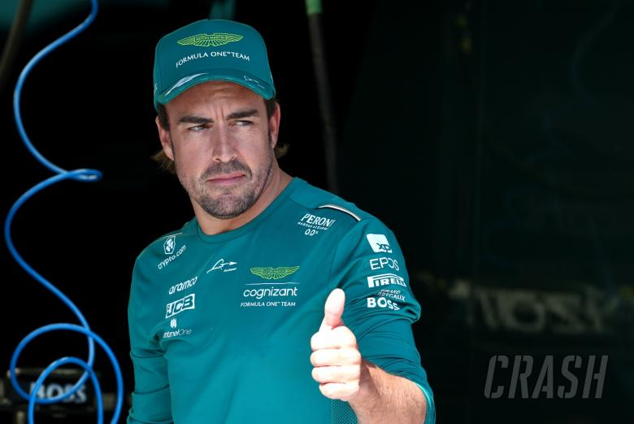

Biografia
Nom: Fernando Alonso Díaz Data de naixement: 29 de juliol de 1981 Lloc de naixement: Oviedo, Astúries, Espanya Fernando Alonso és un destacat pilot d'automobilisme de Fórmula 1 espanyol, considerat un dels millors en la història d'aquest esport. Va néixer a Oviedo, Espanya, i des d'una edat primerenca va mostrar un gran interès pels cotxes i les curses. La seva carrera a la Fórmula 1 va començar l'any 2001 amb l'equip Minardi, però va ser l'any 2003 quan es va unir a Renault, on va assolir la fama i l'èxit. Amb Renault, Alonso va guanyar dos campionats mundials consecutius el 2005 i el 2006, convertint-se en el campió més jove en la història de la Fórmula 1 en aquell moment. Després del seu exitós període amb Renault, Alonso va competir per diversos equips de Fórmula 1, incloent McLaren, Ferrari i, posteriorment, va tornar a McLaren. Durant la seva carrera, va acumular nombroses victòries en Grans Premis, demostrant la seva habilitat i competitivitat a cada temporada. Un dels moments més destacats de la seva carrera va ser el seu retorn a McLaren el 2015 i la seva lluita constant pel campionat mundial el 2012 amb Ferrari, on va quedar en segon lloc per molt poc marge. A més del seu èxit a la Fórmula 1, Alonso també va iniciar-se en altres tipus de curses, com el Campionat Mundial de Resistència de la FIA (WEC) i la famosa cursa de resistència, les 24 Hores de Le Mans. El 2018 i el 2019, va guanyar el WEC i les 24 Hores de Le Mans amb l'equip Toyota Gazoo Racing. Fernando Alonso és conegut per la seva habilitat, determinació i passió per les curses. La seva carrera ha inspirat nombrosos pilots i seguidors de l'automobilisme a tot el món, i el seu nom és sinònim d'excel·lència en el món de les curses de Fórmula 1.
